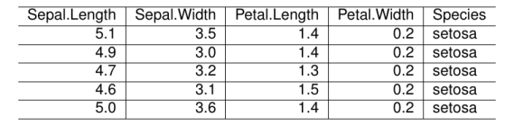
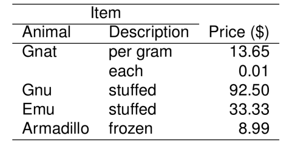

vignettes/rmarkdown.Rmd
rmarkdown.Rmd
library(texPreview)
tex_opts$set(
returnType = 'html',
opts.html = list(width = '75%', height = '75%')
)The following examples use kable to generate LaTeX table outputs and raw LaTeX to pipe into tex_preview to render the in the document.
knitr::kable(head(iris,5),format = 'latex') |>
tex_preview()
#> Warning in knitr::include_graphics(tmp): It is highly recommended to use
#> relative paths for images. You had absolute paths: "/Users/runner/work/
#> texPreview/texPreview/docs/articles/rmarkdown_files/figure-html/testOut-1.png"
tab='
\\begin{tabular}{llr}
\\hline
\\multicolumn{2}{c}{Item} \\\\
\\cline{1-2}
Animal & Description & Price (\\$) \\\\
\\hline
Gnat & per gram & 13.65 \\\\
& each & 0.01 \\\\
Gnu & stuffed & 92.50 \\\\
Emu & stuffed & 33.33 \\\\
Armadillo & frozen & 8.99 \\\\
\\hline
\\end{tabular}'
tab |>
tex_preview()
#> Warning in knitr::include_graphics(tmp): It is highly recommended to use
#> relative paths for images. You had absolute paths: "/Users/runner/work/
#> texPreview/texPreview/docs/articles/rmarkdown_files/figure-html/testOut2-1.png"